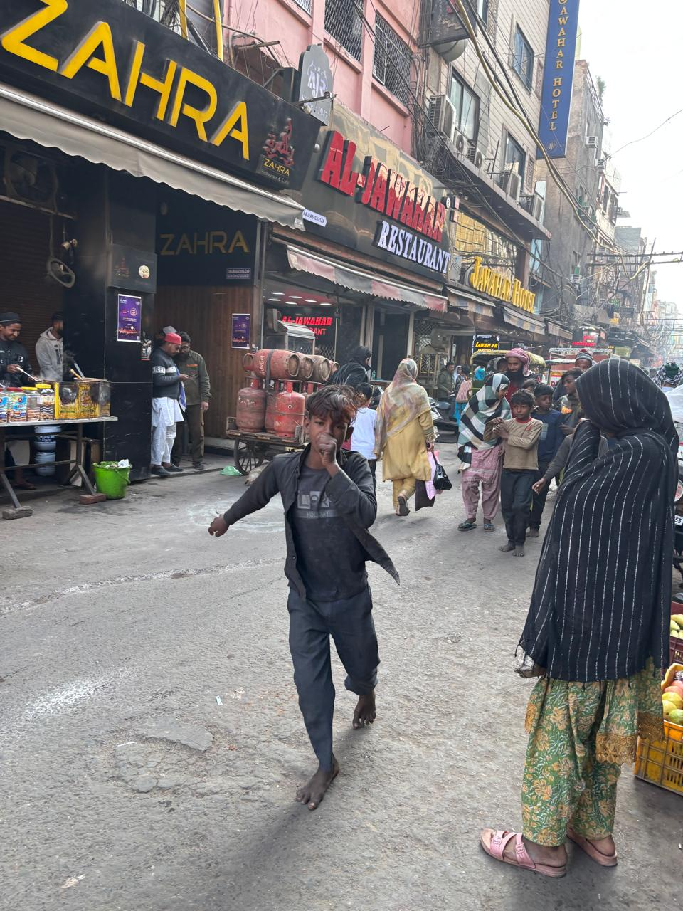

Kamran Akhtar @kamran_reports

Invisible on the Avenue
“A barefoot child visibly consuming intoxicants walks a busy Delhi street outside Zahra and Al-Jawahar Restaurant. LPG cylinders are stacked on a cart behind him. The crowd moves around him as though he is not there.”
Field reporting, documentary filmmaking, RTI & public-data auditing, web desk editing, and synthetic media verification.
Visual Dispatches & Ground Essays
Hosted Photographic Edition — Visual Archive Layer
Alongside the self-contained broadsheet dispatches on this page, my original hosted photographic edition houses the full-resolution raster photography archive, full-bleed darkroom spreads, and visual field layouts across Old Delhi, Meenapur, Fort Kochi, Kashmir, and Delhi-NCR.
Published Clips & External Dispatches
Delhi Blast before Bihar Polling and other shades of the story
Ground reporting examining the aftermath of the November 10, 2025 car blast near Delhi’s Red Fort—just one day before the November 12 Bihar assembly polling—following the arrests of doctors linked to Faridabad’s Al-Falah Medical College. Captures the voices of uninvolved medical graduates mentored by Indian Army veterans and interrogates media accountability amid viral misinformation.
Shocking Details Emerge: Athar Hussain Died a Week After Brutal Assault, Denied Timely Medical Care
Reconstructs medical records, family testimonies, and institutional lapses surrounding the death of Athar Hussain following a brutal assault and delayed emergency medical intervention.
Public News X Author Feed — Economy, AI Policy, National Affairs & Geopolitics
Ongoing reporting and desk coverage tracking regulatory developments, AI governance, parliamentary legislation, and West Asian geopolitical shifts.
VERITAS v1.0 — Verification and Editorial Responsibility for Information Trustworthiness and Authentic Sourcing
A research-grounded synthetic media and AI-misinformation verification protocol built for low-bandwidth, multilingual Global South newsrooms—featuring the 5-Stage & RAPID workflows, 8-signal AI text analysis, and DART framing standards.
Winter Air Pollution in Delhi-NCR: Structural Causes & Policy Blueprint
Synthesises CPCB monitoring data, stubble burning, vehicular emissions, and municipal dust control into a multi-agency mitigation roadmap.
Inspect Policy Dossier →E-Waste EPR Compliance & Informal Recycling Audit (RTI Framework)
Multi-jurisdictional Right to Information audit cross-referencing CPCB Extended Producer Responsibility filings against informal dismantling hubs.
Inspect RTI Methodology →Fellowships, Newsroom Experience & Toolkit
Sub Editor at Web Desk — Business Standard
National Financial DailyReal-time digital desk editing, headline craft, wire verification, market/policy copy curation, and high-velocity breaking news packaging under strict accuracy standards.
ERAI AI Journalism Fellow (Cohort 1) ↗
Knowledge NetworksSelected fellow on Ethics & Responsible AI in journalism; co-authored the synthetic media verification framework for Global South newsrooms.
Academic Training & Reporting Networks
DSJ & IIMCTrained at the Delhi School of Journalism (DSJ) and the Indian Institute of Mass Communication (IIMC). Active contributor across Muslim Mirror, Public News X, Reporters101, and 5wh.com.
- Verification: InVID, FotoForensics, SunCalc, Audacity
- Data & Code: Python (pandas, regex, thefuzz), SQL
- Public Records: RTI Act Audits, eCourts, CPCB, ECI
- Visual & Film: Documentary Direction, Street Photo
- Languages: English, Hindi, Urdu
Computational Journalism & Zero-Dependency Broadsheet Architecture
Engineered as a self-contained static HTML/CSS/SVG broadsheet for fast loading on constrained mobile networks, deterministic A4/Letter print tearsheets, and reproducible reporting workflows (Python pandas, regex, thefuzz, and VERITAS v1.0 verification protocols).
Note to Fellowship Juries & Commissioning Editors: This portfolio is an active, continuously updated working edition—new field photography, RTI filings, and ongoing investigations are staged here as they clear editorial verification.